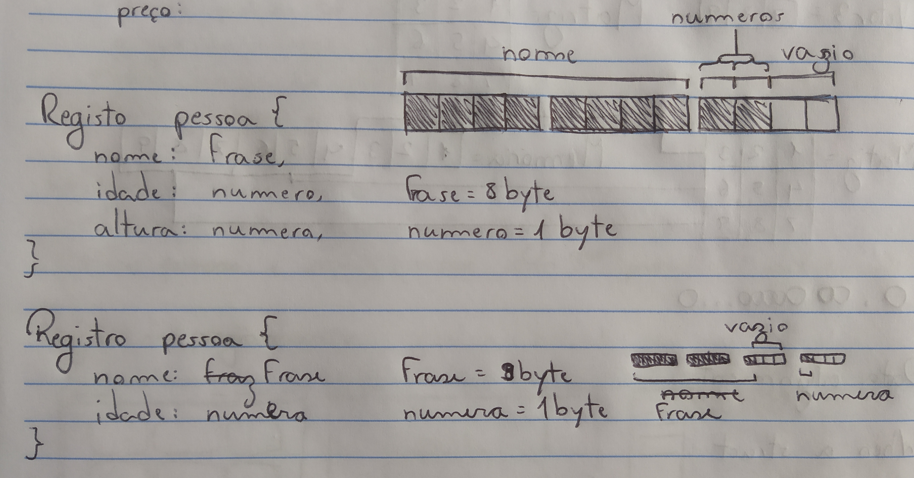

Registros
O que são registros
Registros são estruturas de dados, parecidos com vetores, no entanto conseguem armazenar vários tipos de variáveis. Eles contêm campos que especificam o tipo de informação armazenada, podem ser também chamados de chaves.
Cada estrutura de registro tem um nome, seus dados podem ser acessados por um ponto.
Registro Livro = {Nome: frase, Lançamento: data, Tamanho: número}
Nome do livro == Livro.Nome
Estrutura de um Registro
Declaração
Registro = {
....campo: tipo de variável;
}
Atribuição
registro nome_variavel.campo = valor;
Como são armazenados na memoria
Quando um Registro é declarado, o computador separa um bloco de memória para cada campo dele.
O tamanho do bloco de memória depende do tamanho que cada campo precisa para armazenar seu valor, quantos bytes o processador consegue ler ao mesmo tempo e ordem de declaração das variáveis.
O computador armazena variáveis de forma que ocupem o espaço de 1 ciclo da CPU, 1 ciclo é a quantidade de bytes que um processador consegue ler ao mesmo tempo. Por exemplo, um processador d 32bits lê 4 bytes ao mesmo tempo.
Caso uma variável diferente precise ser armazenada, mas o espaço de 1 ciclo não foi preenchi ainda, o computador colocará bytes vazios até que o ciclo seja preenchido. Dessa forma é possível otimizar a quantidade de ciclos necessária para executar um programa, aumentando a velocidade de execução.
